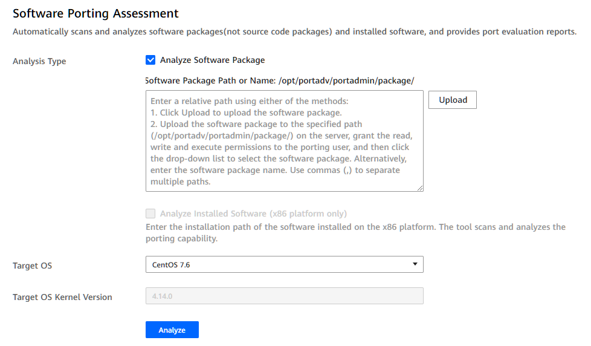

Prerequisites
You have logged in to the Kunpeng Porting Advisor WebUI.
/opt/portadv is the default installation directory of the tool. The following uses this directory as an example. Replace it with the actual directory.
Procedure
- Choose Software Porting Assessment from the navigation pane on the left.
- Select Analyze Software Package or Analyze Installed Software, and set parameters.
- Analyze Software Package and Analyze Installed Software are independent of each other. You can select one or both of them.
- Analyze Installed Software is available only in x86 environments.
Figure 1 Software Porting Assessment
Table 1 Parameters for software porting assessment Parameter
Description
Analyze Software Package
Software Package Path or Name
Enter a relative path using either of the following methods:- Click Upload to upload the software package.
- Manually upload the software package to the specified path (for example, /opt/portadv/portadmin/package/) on the server. Grant the read, write, and execute permissions to the porting user. Then, click the text box to select the software package from the drop-down list. You can also manually enter the software package name. Use commas (,) to separate paths.
NOTE:- Only one software package can be uploaded at a time. The size of the software package must be less than or equal to 1 GB, and the size of the decompressed software file must be less than or equal to half of the remaining drive space.
- The software package can be in the rpm, deb, jar, war, tar, zip, gz, tar.gz, tar.bz, tgz, tbz, tbz2, egg, whl format.
- Debian-like systems support scan of software package in the deb, jar, war, tar, zip, gz, tar.gz, tar.bz, tgz, tbz, tbz2, egg, or whl format.
- RHEL-like systems support scan of software package in the rpm, jar, war, tar, zip, gz, tar.gz, tar.bz, tgz, tbz, tbz2, egg, or whl format.
Analyze Installed Software (x86 platform only)
Software Installation Path (x86)
Enter the absolute path of the installed software, for example, /home/pathname/.
Target OS
Select the version of the target OS.
Value:
- BC-Linux 7.6/7.7
- CentOS 7.4/7.5/7.6/7.7/8.0/8.1/8.2
- Deepin V15.2
- Debian 10
- EulerOS 2.8
- iSoft 5.1
- Kylin V10 SP1
- LinxOS 6.0.90
- NeoKylin V7U5/V7U6
- openEuler 20.03
- openEuler 20.03 SP1
- openEuler 20.03 SP2
- SLES 15.1
- Ubuntu 18.04.x/20.04.x
- UOS 20 SP1
- uosEuler 20
- More
NOTE:Click More, upgrade the dependency dictionary according to the steps on the page, and view the updated OS list.
Target OS Kernel Version
Kernel version of the target operating system.
- BC-Linux 7.6: 4.19.25
- BC-Linux 7.7: 4.19.25
- CentOS 7.4: 4.11.0
- CentOS 7.5: 4.14.0
- CentOS 7.6: 4.14.0
- CentOS 7.7: 4.18.0
- CentOS 8.0: 4.18.0
- CentOS 8.1: 4.18.0
- CentOS 8.2: 4.18.0
- Deepin V15.2: 4.19.34
- Debian 10: 4.14.0
- EulerOS 2.8: 4.19.36
- iSoft 5.1: 4.19.90
- Kylin V10 SP1: 4.19.90
- LinxOS 6.0.90: 4.19.0
- NeoKylin V7U5: 4.14.0
- NeoKylin V7U6: 4.14.0
- openEuler 20.03: 4.19.90
- openEuler 20.03 SP1: 4.19.90
- openEuler 20.03 SP2: 4.19.90
- SLES 15.1: 4.12.14
- Ubuntu 18.04.x: 4.15.0
- Ubuntu 20.04.x: 5.4.0
- UOS 20 SP1: 4.19.0
- uosEuler 20: 4.19.90
- Click Analyze.
The task analysis progress is displayed. After the analysis is complete, click View Report.
- To cancel a task, click Close during the analysis process.
- The tool supports concurrent running of multiple analysis tasks.
- If the task analysis fails or the evaluation result indicates that porting is not required, an empty report is generated.